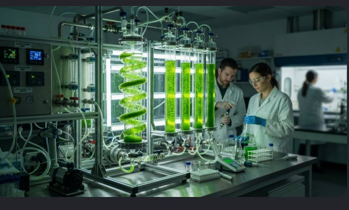

Environment & Energy
Nature’s Solar Panels: How Microalgae Are Rewriting Biofuel Horizons

As global demand for clean energy intensifies and countries seek alternatives to fossil fuels, researchers are looking past conventional biofuel crops like corn, palm oil, and sugarcane toward a microscopic powerhouse: microalgae. For decades, first-generation biofuels faced fierce criticism because cultivating energy crops competed directly with food production for fertile farmland and freshwater—a critical concern in agricultural economies vulnerable to climate variability. Microalgae sidestep this conflict entirely. These single-celled aquatic organisms multiply at exponential rates, capable of doubling their biomass within hours while converting sunlight and carbon dioxide into lipid-rich oils that can be refined into biodiesel and sustainable aviation fuel.
Unlike terrestrial crops, algae store up to 50 percent of their dry weight as natural triglycerides, yielding significantly more energy per hectare than soybeans or sunflowers. Furthermore, closed-loop photobioreactors and open raceway ponds can be built on arid, non-arable land, transforming unproductive regions into clean-energy hubs.
“Microalgae do not require arable land or freshwater to thrive, which makes them uniquely suited for sustainable scaling,” notes Dr. Alan Ochieng, a biochemical engineer specializing in renewable energy systems. “We can cultivate them in brackish water, seawater, or even nutrient-rich municipal wastewater. In doing so, the algae clean the water by absorbing excess nitrates and phosphates while simultaneously capturing carbon dioxide emissions directly from industrial exhausts.”
Despite their biological efficiency, bringing algae biofuels to the pump at competitive prices remains an engineering hurdle. Harvesting microscopic cells from large volumes of water and extracting their lipids requires substantial energy input. However, breakthroughs in automated membrane filtration, genetic strain optimization, and co-product monetization—where leftover protein-rich algae biomass is sold as livestock feed or organic fertilizer—are steadily driving production costs downward. With global aviation and maritime industries under pressure to decarbonize, energy analysts project that algae-based fuels will become a cornerstone of green transport over the next decade.